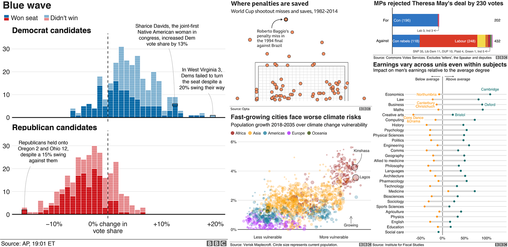

Hoe kunnen we grafieken in BBC-stijl produceren
Bij het BBC datateam hebben ze een R-pakket en een R-kookboek ontwikkeld. Met dat pakket en kookboek wordt het proces van het maken van publicatieklare grafieken in hun huisstijl geautomatiseerd. Met behulp van R’s ggplot2-pakket wordt er een meer reproduceerbaar proces van gemaakt. Voor nieuwe R-gebruikers wordt het zo ook gemakkelijker gemaakt om deze grafieken te maken.

Het kookboek, dat in februari 2019 hier verscheen, heb ik in het Nederlands vertaald om zelf goed door te krijgen hoe het allemaal werkt. Het kookboek en deze Nederlandse versie wil iedereen helpen om dit soort grafieken te maken:
Laten we eens zien hoe we de verschillende elementen van deze grafieken in elkaar kunnen zetten. Maar eerst eens enkele administratieve zaken…
Laad eerst alle pakketten die je nodig hebt in R
Een paar van de stappen in dit kookboek - om grafieken in R in het algemeen te kunnen maken - vereisen dat bepaalde pakketten worden geïnstalleerd en geladen. Zo hoeft u ze niet één voor één te installeren en te laden. Door de p_load-functie in het pacman-pakket kunt u ze allemaal tegelijk laden met de volgende code.
Installeer in ieder geval het bbplot pakket
bbplot staat niet op CRAN (het algemene platform voor R-pakketten). U moet het direct vanaf Github installeren met behulp van devtools.
Als u het devtools-pakket niet heeft geïnstalleerd, moet u ook de eerste regel in de code hieronder uitvoeren.
Voor meer informatie over bbplot-pakket, bekijk het volgende Github repo. Dat wat u moet weten over het gebruik van het pakket en de functies, is hieronder gedetailleerd te vinden.
Wanneer u het pakket hebt gedownload en met succes hebt geïnstalleerd, bent u in staat om grafieken te gaan maken.
Hoe werkt dat bbplot-pakket eigenlijk?
Het pakket heeft twee functies, bbc_style() en finalise_plot().
bbc_style(): heeft geen argumenten en wordt toegevoegd aan de ggplot ‘keten’ nadat je een plot hebt gemaakt. Wat het doet is over het algemeen tekstgrootte, lettertype en kleur, aslijnen, aslijnen, as-tekst, marges en vele andere standaardgrafiekonderdelen in BBC-stijl. Die zijn geformuleerd op basis van aanbevelingen en feedback van het ontwerpteam.
Merk op dat kleuren voor lijnen in het geval van een lijndiagram bijvoorbeeld of balken voor een staafdiagram, niet uit het kader van de bbc_style() functie komen. Die moeten expliciet worden ingesteld in uw standaard ggplot-grafiekfuncties.
De code hieronder laat zien hoe de bbc_style() gebruikt moet worden binnen de standaard workflow om grafieken te maken. Dit is een voorbeeld van een zeer eenvoudige lijndiagram. De data waar gebruik van wordt gemaakt komen uit het gapminder-pakket.

Dit is wat de bbc_style()-functie eigenlijk onder de motorkap doet. Het wijzigt in wezen bepaalde argumenten in de thema functie van ggplot2.
Het eerste argument is bijvoorbeeld het instellen van het lettertype, de grootte, het lettertype en de kleur van het titelelement van de grafiek.
function ()
{
font <- "Helvetica"
ggplot2::theme(plot.title = ggplot2::element_text(family = font,
size = 28, face = "bold", color = "#222222"), plot.subtitle = ggplot2::element_text(family = font,
size = 22, margin = ggplot2::margin(9, 0, 9, 0)), plot.caption = ggplot2::element_blank(),
legend.position = "top", legend.text.align = 0, legend.background = ggplot2::element_blank(),
legend.title = ggplot2::element_blank(), legend.key = ggplot2::element_blank(),
legend.text = ggplot2::element_text(family = font, size = 18,
color = "#222222"), axis.title = ggplot2::element_blank(),
axis.text = ggplot2::element_text(family = font, size = 18,
color = "#222222"), axis.text.x = ggplot2::element_text(margin = ggplot2::margin(5,
b = 10)), axis.ticks = ggplot2::element_blank(),
axis.line = ggplot2::element_blank(), panel.grid.minor = ggplot2::element_blank(),
panel.grid.major.y = ggplot2::element_line(color = "#cbcbcb"),
panel.grid.major.x = ggplot2::element_blank(), panel.background = ggplot2::element_blank(),
strip.background = ggplot2::element_rect(fill = "white"),
strip.text = ggplot2::element_text(size = 22, hjust = 0))
}
<bytecode: 0x000000001ed90ee8>
<environment: namespace:bbplot>U kunt deze instellingen voor uw grafiek wijzigen of extra thema-argumenten toevoegen. Dit kan door thema-functie aan te roepen met de argumenten die u wilt. Maar, let op: om het te laten werken, moet u de bbc_style functie hebben aangeroepen. Anders zal bbc_style() deze overrulen.
Dit voegt enkele rasterlijnen toe, door extra thema-argumenten toe te voegen aan wat er in de bbc_style() functie zit. Er zitten verschillende gelijkaardige voorbeelden in het kookboek.
Sla jouw afgeronde grafiek op
Na het toevoegen van de bbc_style() aan uw grafiek is er nog een stap om uw grafiek klaar te maken voor publicatie. finalise_plot(), de tweede functie van het bbplot-pakket, zal de titel links uitlijnen, ondertitelen en de footer toevoegen met een bron en een afbeelding in de rechter benedenhoek van uw grafiek. Het zal het ook opslaan op de door u opgegeven locatie. De functie heeft vijf argumenten:
Hier zijn de argumenten van de functie: finalise_plot(plot_name, source, save_filepath, width_pixels = 640, height_pixels = 450).
plot_name: de variabelenaam die u uw plot heeft genoemd, bijvoorbeeld voor het voorbeeld hierboven zou “lijn” deplot_namezijn
- source: de brontekst die u linksonder in uw plot wilt weergeven. U moet het woord
"Source: "Bron:"voor het woord typen, dus bijvoorbeeldsource = "Bron": Gapminder"zou de juiste manier zijn om dat te doen. Save_filepath: type hier het precieze bestandspad waarin u uw afbeelding wilt opslaan, inclusief de.pngextensie aan het einde. Dit is afhankelijk van uw werkmap en of u zich in een specifiek R-project bevindt. Een voorbeeld van een bestandspad zou zijn:Desktop/R_projecten/figuren/lijngrafiek.png.width_pixels: dit is standaard ingesteld op 640px, dus noem dit argument alleen als u wilt dat de grafiek een andere breedte heeft, en geef aan wat u wilt dat het is.hoogte_pixels: dit is standaard ingesteld op 450px, dus noem dit argument alleen als u wilt dat de grafiek een andere hoogte heeft en geef aan wat u wilt dat het is.logo_image_path: dit argument specificeert het pad voor het beeld/logo in de rechter benedenhoek van het diagram. De standaardinstelling is voor een PNG-bestand met een achtergrond die overeenkomt met de achtergrondkleur van het diagram. Dus specificeer het argument niet als u wilt dat het zonder logo verschijnt. Als u uw eigen logo wilt toevoegen, hoeft u alleen het pad naar uw PNG-bestand te specificeren. Het pakket is opgezet met een brede en dunne afbeelding in gedachten.
Voorbeeld van hoe de finalise_plot() wordt gebruikt in een standaard workflow. Deze functie wordt aangeroepen zodra u uw grafiekgegevens, titels en de bbc_style() eraan hebt toegevoegd:
Als u eenmaal uw plot hebt gemaakt en er relatief tevreden mee bent, kunt u de finalise_plot() functie gebruiken om de laatste aanpassingen te maken en uw grafiek op te slaan zodat u er buiten RStudio naar kunt kijken.
Het is belangrijk om te vermelden dat het een goed idee is om dit in een vroeg stadium te doen omdat de positie van de tekst en andere elementen niet nauwkeurig worden weergegeven in het RStudio Plots paneel. Hier is het afhankelijk van de grootte en de aspect ratio die u wilt dat uw plot verschijnt. Het opslaan en openen van de bestanden geeft u een nauwkeurige weergave van hoe de grafiek eruit ziet.
De finalise_plot()-functie doet meer dan alleen het opslaan van je grafiek. Het lijnt ook de titel en ondertiteling links uit zoals standaard is voor BBC-grafieken, voegt een footer toe met het logo aan de rechterkant en laat je de brontekst aan de linkerkant invoeren.
Dus hoe kunt u de bovenstaande voorbeeldplot opslaan?
Maak een lijn figuur

Make een grafiek met verschillende lijnen

Maak een staafdiagram

Maak een gestapelde staaf diagram

Dit voorbeeld toont proporties, maar u wilt misschien een gestapelde staafdiagram maken met nummerwaarden - dit is eenvoudig te veranderen!
De waarde die wordt doorgegeven aan het position-argument zal bepalen of uw gestapelde grafiek verhoudingen of werkelijke waarden toont.
positie = "fill" zal uw stapels vertonen als proporties, en position = "identity" zal getalwaarden laten zien.
Maak een gegroepeerde staafdiagram
Het maken van een gegroepeerde staafdiagram lijkt erg op het maken van een staafdiagram.
Je hoeft alleen maar position = "identity" te veranderen in position="dodge" en de vulling wordt esthetisch.

Maak een halter grafiek
Een andere manier om het verschil te laten zien is een ‘dumbbell’-grafiek:

Maak een histogram

Breng veranderingen aan in de legenda
Verwijder de legenda
Verwijder de legende - het is beter om de gegevens direct te labelen met tekstannotaties.
Gebruik guides(colour=FALSE) om de legende te verwijderen voor een specifieke esthetiek (vervang kleur door de relevante esthetiek).
U kunt ook alle legenden in één keer verwijderen met behulp van theme(legend.position = "none"):

Verander de positie van de legenda
De standaardpositie van de legenda staat bovenaan uw grafiek. Verplaats de legenda naar links, rechts of onderaan buiten de plot met:

Om echt precies te zijn over waar we onze legenda naartoe willen, in plaats van “rechts” of “boven” te specificeren om de algemene positie van waar de legende in onze grafiek verschijnt te veranderen, kunnen we het specifieke coördinaten geven.
Bijvoorbeeld legend.position=c(0.98,0.1) zal de legenda naar rechtsonder verplaatsen. Ter referentie, c(0,0) is linksonder, c(1,0) is rechtsonder, c(0,1) is linksboven en zo verder). Het vinden van de exacte positie kan wat vallen en opstaan met zich meebrengen.
Om de exacte positie te controleren waar de legenda in uw definitieve plot verschijnt, moet u het bestand controleren dat is opgeslagen nadat u uw finalise_plot() functie hebt uitgevoerd, aangezien de positie relevant is voor de afmetingen van de grafiek.
Om de legenda tegen de linkerkant van uw grafiek te laten aankomenen, kan het makkelijker zijn om een negatieve linkermarge voor de legenda in te stellen met behulp van legend.margin. De syntaxis is margin(top, right, bottom, left).
U zult moeten experimenteren om het juiste getal te vinden om de marge voor uw grafiek in te stellen. Sla het op met finalise_plot() en bekijk hoe het eruit ziet.
Verwijder de titel van de legenda
Verwijder de titel van de legenda door uw thema()aan te passen. Vergeet niet dat eventuele wijzigingen aan het thema moeten worden toegevoegd nadat u bbc_style() hebt opgeroepen!
Gooi de volgorde van de legenda om
Soms moet u de volgorde van uw legenda wijzigen, zodat deze overeenkomt met de volgorde van uw balken. Hiervoor heb je guides nodig:
Verander de layout van jouw legenda
Als u veel waarden in uw legenda hebt, moet u de lay-out misschien om esthetische redenen aanpassen.
U kunt het aantal rijen opgeven dat u wilt dat u in uw legenda door als argument guides te gebruiken gebruiken. Het onderstaande codefragment, bijvoorbeeld, zal een legende met 4 rijen maken:
Het kan nodig zijn om fill in de bovenstaande code te veranderen in een esthetiek die uw legenda beschrijft, zoals size, colour, enz.
Laat de legendasymbolen er anders uit zien
U kunt het standaardinstelling van de legendesymbolen overschrijven, zonder de manier waarop ze in de plot verschijnen, door het argument override.aes toe te voegen aan guides.
Het onderstaande maakt bijvoorbeeld de grootte van de legendesymbolen groter:
Breng wat ruimte aan tussen de legenda labels
De standaard ggplot-legenda heeft bijna geen ruimte tussen individuele legenda-items. Niet ideaal.
U kunt ruimte toevoegen door de schaallabels handmatig te wijzigen.
Als u bijvoorbeeld de kleur van uw geoms zo hebt ingesteld dat deze afhankelijk is van uw gegevens, krijgt u een legenda voor de kleur en kunt u de exacte labels aanpassen om wat extra ruimte te krijgen met behulp van het onderstaande fragment:
Als uw legende iets anders laat zien, moet u de code dienovereenkomstig wijzigen. Bijvoorbeeld, voor het vullen heeft u scale_fill_manual() in plaats daarvan nodig.
Pas de assen aan
Gooi de coordinaten van een plot om
Voeg coord_flip() toe om verticale staven horizontaal te maken:

Toevoegen/weghalen van gridlijnen
Het standaard thema heeft alleen rasterlijnen voor de y-as. Voeg x rasterlijnen toe met panel.grid.major.x = element_line.
(Verwijder op dezelfde manier de rasterlijnen op de y-as met panel.grid.major.y=element_blank())

Verander de astekst met de hand
U kunt de tekstlabels van de assen vrij wijzigen met scale_y_continuous of scale_x_continuous:

Dit specificeert ook de grenzen van uw grafiek en waar u as-tekens wilt hebben.
Voeg duizend scheidingstekens toe aan u as-labels
U kunt aangeven dat u wilt dat uw as-tekst duizend scheidingstekens heeft met een argument schale_y_continuous.
Er zijn twee manieren om dit te doen, een in basis R die een beetje lastig is:
De tweede manier is gebaseerd op het scales- pakket, maar is veel beknopter:
Voeg een percentagesymbool toe aan jouw aslabels
Dit is ook gemakkelijk met een argument toe te voegen aan scale_y_continuous:
Verander de limieten van de plot
De lange manier om de grenzen van uw grafiek expliciet in te stellen is met scale_y_continuous zoals hierboven. Maar als u de pauzes of labels niet hoeft op te geven, dan is dat met xlim of ylim:

Voeg astitels toe
Ons standaardthema heeft geen as-titels, maar u kunt ze misschien handmatig toevoegen. Dit doet u door theme() - merk op dat je dit moet doen na de aanroep naar bbc_style() anders worden je wijzigingen overruled:
Pas astitels aan
Als u in de assen titels toevoegt, zijn dit standaard de kolomnamen van uw dataset. U kunt dit veranderen door labs()op te roepen in wat u doet.
Als u bijvoorbeeld wilt dat de x-as de titel “Ik ben een as” krijgt en de y-as label leeg is, dan is dit het formaat:
Add axis ticks
U kunt as-streepjes toevoegen door axis.ticks.x of axis.ticks.y toe te voegen aan uw theme:

Toevoegen van annotaties
Voeg een annotatie toe
De eenvoudigste manier om een tekstannotatie toe te voegen aan uw grafiek is met behulp van geom_label:

De exacte positionering van de annotatie zal afhangen van de x en y argumenten (wat een beetje lastig is!) en de tekstuitlijning, met behulp van hjust en vjust - maar meer van dat hieronder.
Voeg regelafbrekingen waar nodig in uw label toe met n\ en stel de regelhoogte in met lineheight.
Laten we onze directe labels erin krijgen!

Tekst links en rechts uitlijnen
De argumenten hjust en vjust dicteren horizontale en verticale tekstuitlijning. Ze kunnen een waarde tussen 0 en 1 hebben, waarbij 0 links-uitlijnend en 1 rechts-uitlijnend is (of onder- en boven-uitlijnend voor verticale tekstuitlijning).
Voeg labels toe op basis van jouw data
Met de bovenstaande methode voor het toevoegen van annotaties aan uw grafiek kunt u de x- en y-coördinaten precies aangeven. Dit is erg handig als we een tekstannotatie op een bepaalde plaats willen toevoegen, maar het zou erg vervelend zijn om te herhalen.
Gelukkig, als u labels wilt toevoegen aan al uw datapunten, kunt u in plaats daarvan eenvoudigweg de positie instellen op basis van uw gegevens.
Laten we zeggen dat we gegevenslabels willen toevoegen aan onze staafdiagram:

Bovenstaande code voegt automatisch één tekstlabel toe voor elk continent zonder dat we vijf keer geom_label moeten toevoegen.
(Als je in de war raakt over waarom we de x instellen als de continenten en y als levensverwachting, als de grafiek ze andersom lijkt te tekenen, dan is dat omdat we de coördinaten van de plot hebben omgedraaid met coord_flip(), wat je kunt doen lees meer over hier.)
Voeg links uitgelijnde labels toe aan jouw staafdiagrammen
Als u liever links uitgelijnde labels voor uw balken toevoegt, stelt u gewoon het x argument in op basis van uw gegevens, maar specificeer dan het y argument direct, met een numerieke waarde.
De exacte waarde van y hangt af van het bereik van uw gegevens.

Voeg een lijn toe
Voeg een lijn toe met geom_segment:

Het size-argument specificeert de dikte van de lijn.
Voeg een gecurfte lijn toe
Voor een gekromde lijn gebruikt u geom_curve in plaats van geom_segment:

Het curvature argument bepaalt de kromming van de curve: 0 is een rechte lijn, negatieve waarden geven een linkse curve en positieve waarden geven een rechtse curve.
Voeg een pijl toe
Een lijn in een pijl omzetten is vrij eenvoudig: voeg gewoon het arrow argument toe aan je geom_segment of geom_curve:

Het eerste argument, unit, stelt de grootte van de pijlpunt in.
Voeg een lijn over de hele figuur toe
De eenvoudigste manier om een lijn over het hele perceel toe te voegen is met geom_vline(), voor een verticale lijn, of geom_hline(), voor een horizontale lijn.
Optionele extra argumenten stellen u in staat om de grootte, kleur en het type lijn te specificeren (de standaard optie is een effen lijn).

De lijn voegt natuurlijk niet veel toe in dit voorbeeld, maar dit is handig als je iets wilt benadrukken, bijvoorbeeld een drempelwaarde of een gemiddelde waarde.
Het is ook vooral handig omdat onze ontwerpstijl - zoals u misschien al hebt gemerkt in de grafieken op deze pagina - bestaat uit het toevoegen van een verticale of horizontale basislijn aan onze grafieken. Dit is de code om te gebruiken:
Werken met kleinere figuren
Kleine, meervoudige kaarten zijn eenvoudig te maken met ggplot: het heet facetteren.
Facetteren
Als u gegevens hebt die u wilt visualiseren opgesplitst naar een variabele, moet u facet_wrap of facet_grid gebruiken.
Voeg de variabele die je wilt delen aan deze regel code toe: facet_wrap( ~ variabele) `.
Een extra argument bij facet_wrap, ncol, stelt u in staat om het aantal kolommen te specificeren:

Vrije schalen
Het is u wellicht opgevallen dat Oceanië, met zijn relatief kleine bevolking, volledig is verdwenen in de bovenstaande grafiek.
Standaard wordt bij facetteren gebruik gemaakt van vaste asschalen over de kleine veelvouden. Het is altijd het beste om dezelfde y-as schaal over kleine veelvouden te gebruiken, om misleiding te voorkomen, maar soms moet je deze onafhankelijk van elkaar instellen voor elk veelvoud, wat we kunnen doen door het argument schales= "free".
Als je alleen de schalen voor één as wilt vrijgeven, zet je het argument op free_x of free_y.

Doe iets anders uiteindelijk
Toename en afname van marges
U kunt de marge rond bijna elk element van uw plot - de titel, ondertitels, legenda - of de grafiek zelf wijzigen.
Normaal gesproken hoeft u de standaardmarges van het thema niet te wijzigen, maar als u dat wel doet, is de syntaxis theme(ELEMENT=element_text(margin=margin(0, 5, 10, 0))).
De getallen specificeren respectievelijk de boven-, rechter-, onder-, en linkermarge - maar u kunt ook direct aangeven welke marge u wilt wijzigen. Laten we bijvoorbeeld proberen de ondertitel een extra grote ondermarge te geven: You can change the margin around almost any element of your plot - the title, subtitles, legend - or the plot itself.

Hm… misschien niet.
Exporteer jouw figuur en x-as marges
U moet wel nadenken over uw x-as margematen wanneer u een figuur produceert dat buiten de standaardhoogte in bbplot ligt, dat is 450px. Dit kan bijvoorbeeld het geval zijn als u een staafdiagram maakt met veel balken en ervoor wilt zorgen dat er wat ademruimte is tussen elke staaf en labels. Als u de marges laat zoals ze zijn voor figuren met een grotere hoogte, dan kunt u een grotere afstand tussen de as en uw labels krijgen.
Hier is een handleiding waar we aan werken als het gaat om de marges en de hoogte van uw staafdiagram (met coord_flip erop toegepast):
| size | t | b |
|---|---|---|
| 550px | 5 | 10 |
| 650px | 7 | 10 |
| 750px | 10 | 10 |
| 850px | 14 | 10 |
Dus wat u zou moeten doen is deze code toevoegen aan uw grafiek als u bijvoorbeeld de hoogte van je plot 650px wilde hebben in plaats van 450px.

Hoewel het veel minder waarschijnlijk is, maar als u het equivalent wilt doen voor een lijndiagram en het wilt exporteren op een grotere hoogte dan de standaard hoogte, moet u hetzelfde doen. Maar ook uw waarden voor t veranderen in negatieve waarden op basis van de bovenstaande tabel.
Heroderdenen van de staven op basis van de grootte
Standaard zal R uw gegevens in alfabetische volgorde weergeven, maar in plaats daarvan herordenen op basis van grootte is eenvoudig: gewoon reorder() om de x of y variabele leggen die u wilt herschikken, en geef aan voor welke variabele u de gegevens wilt herschikken.
Bijvoorbeeld x = reorder (country, pop). Oplopende volgorde is de standaard, maar u kunt deze veranderen in aflopende volgorde door desc() rond de variabele te plaatsen waar u de volgorde van wilt wijzigen:

Staven met de hand herordenen
Soms moet u uw gegevens ordenen op een manier die niet alfabetisch of gerangschikt op grootte is.
Om deze correct te ordenen moet u de factorniveaus van uw gegevens instellen voordat u het figuur maakt.
Specificeer de volgorde waarin u de categorieën in het levels argument wilt afdrukken:
U kunt dit ook gebruiken om de delen van een gestapelde staafdiagram opnieuw te ordenen.
Kleur staven conditioneel
U kunt esthetische waarden zoals vulling, alpha en grootte voorwaardelijk instellen met ifelse().
De syntaxis is fill=ifelse(logical_condition, fill_if_true, fill_if_false).